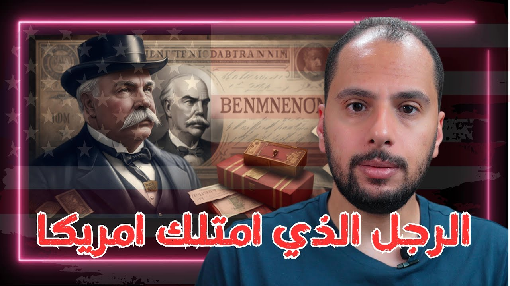

شخصيات واقتصاد
جي بي مورجان الرجل الذي امتلك امريكا - J.P Morgan
JP Morgan اتولد سنة 1837، وبنى باستراتيجية الدمج إمبراطورية في السكك الحديدية والصلب لحد ما عمل US Steel، أول شركة في التاريخ تعدّي قيمتها المليار، واتدخل لإنقاذ اقتصاد أمريكا في أزمتين. وحكاية Titanic؟ نظرية مؤامرة من غير دليل.

شغّل الحلقةتخيل لو أنا قلت لك إن جالي دعوة لحضور أول رحلة على متن السفينة Titanic، وفي اللحظات الأخيرة اعتذرت. هتقول عليّ محظوظ، وإن القدر أنقذني من الموت، صح؟ طيب لو قلت لك كمان إني كنت من المستثمرين في الشركة اللي بتملك Titanic، وإن تلاتة من الناس اللي ماتوا في غرقها كانوا من أكبر المنافسين ليّ، ومعارضين لواحد من أكبر المشاريع اللي كنت عاوز أعملها للبلد؟ ساعتها هتفضل تقول عليّ محظوظ، ولا هتبتدي تفكر بنظرية المؤامرة؟
دي بالظبط الحكاية المشهورة اللي بتتحكي عن JP Morgan (جي بي مورجان). الحكاية بتقول إنه لغى رحلته على Titanic، وإن التلاتة دول هما John Jacob Astor (جون جاكوب أستور) وBenjamin Guggenheim (بنجامين جوجنهايم) وIsidor Straus (إيزيدور شتراوس)، وإن المشروع اللي كانوا معارضينه هو إنشاء بنك مركزي لأمريكا، اللي اتعرف بعد كده باسم Federal Reserve (الاحتياطي الفيدرالي).1
لكن ما فيش دليل واحد على إن Morgan ليه علاقة بغرق السفينة. الثابت إنه كان حاجز جناح على السفينة وغيّر خطته، وإن غرقها كان كارثة مالية لشركته اللي كانت بتملك White Star Line (وايت ستار لاين).2 وما فيش دليل كمان إن التلاتة دول كانوا معارضين لأفكار Morgan عن البنك المركزي: Astor وGuggenheim عمرهم ما اتكلموا علنًا في الموضوع، وStraus اتكلم في صالح الفكرة، وإن كان دعمه ليها ما كانش من غير شروط. وخبراء Titanic ردّوا على النظرية دي وقدّموا أسباب تانية لإلغاء رحلته.1
ومع ذلك، كتير من الناس بيفترضوا النظرية دي، لأن JP Morgan واحد من أكتر الشخصيات المثيرة للجدل في التاريخ الأمريكي، وحياته مليانة بقصص هحكي لك أهمها: إزاي الراجل ده بقى بيمتلك أمريكا حرفيًا؟ وإزاي بقى صاحب أول شركة بمليار دولار في التاريخ؟
ليه الأمريكان بيثقوا في بنك JPMorgan Chase؟ 1:24
في شهر مارس اللي سبق الحلقة، العالم صحي على انهيار بنك Silicon Valley، وبعده انهار بنكين كمان في الولايات المتحدة. والملفت للنظر إن انهيار البنوك دي عمل حالة من الذعر والخوف، خلّت ناس كتير تسحب فلوسها من بنوك تانية في أمريكا وتحطها في بنك JPMorgan Chase (جي بي مورجان تشيس)؛ والبنك نفسه قال بعدها إنه شاف موجة ودايع وحسابات جديدة نتيجة أحداث مارس.3
السؤال هنا: ليه الأمريكان عندهم الثقة الكبيرة دي في بنك مؤسسه كان واحد من أكتر الشخصيات اللي عليها علامة استفهام في تاريخهم، وكان في فترة من الفترات مكروه من ناس كتير، وبيتقال عليه إنه بيتربّح من الحروب؟
إزاي طفولة JP Morgan شكّلت شخصيته؟ 1:53
عشان أجاوبك، تعالى أحكي لك الحكاية من الأول. JP Morgan اتولد سنة 1837 في ولاية من ولايات الشمال الأمريكي، ووالده كان راجل غني اهتم بتعليمه وتأسيسه من صغره، عشان لما يكبر يبقى مستثمر كبير.2 لكن رغم النعيم اللي اتولد فيه، الطفل John كان بيعاني من أمراض كتير، أصعبها مرض زي الصرع،2 غير إصابته المتكررة بأمراض البرد. وده خلّاه يعيش طفولته شبه منعزل عن الأطفال والأصدقاء، ومعظم وقته في البيت.
ولأن وسائل الترفيه والتسلية في الوقت ده كانت محدودة، John ما لقاش غير قراية الكتب تسلّيه. وأعتقد إن دي من أهم الهبات اللي جت له نتيجة مرضه، وأكيد كان لها دور كبير في تكوين شخصيته ومهاراته بعد كده.
وبسبب إصابته بالحمى الروماتيزمية، والده بعته يعيش في واحدة من جزر البرتغال، جزر الأزور، لأنه كان معتقد إن مناخها هيساعده يتعافى. وبعد سنة تقريبًا رجع John يكمّل تعليمه، واتنقل ما بين Boston وسويسرا وألمانيا، لحد ما بقى جاهز سنة 1857 يبدأ حياته العملية.2
أول صفقة في حياة Morgan: إيه حكاية شحنة البن؟ 2:51
بدأ Morgan حياته العملية في الشركة المصرفية اللي والده كان شريك فيها، وبعدها اشتغل في بنك في Wall Street.2 وفي الفترة دي كان متحمس جدًا للنجاح والشغل، والحماس ده خلّاه يعمل أول صفقة في تاريخه: شحنة بن برازيلي موجودة في الميناء، اشتراها من غير إذن الشركة اللي كان شغال فيها، وباعها بربح كويس.2
ورغم إن الصفقة نجحت، الموضوع ما عجبش الشركة بسبب المخاطرة الكبيرة. وبعدها John ساب الشغل وأسس شركته الخاصة، اللي فضلت تشتغل كوكيل لشركة والده.2
وفي الفترة دي الدنيا بدأت تزهزه معاه، وقرر يتجوز وهو عنده 24 سنة. لكن زوجته اتوفت بعد الجواز بأربع شهور.2 التجربة دي كانت من أصعب التجارب على Morgan، ويمكن فضل طول حياته يعاني من أثرها، وأعتقد إنها كانت السبب الرئيسي إنه يكرّس حياته كلها للشغل.
إيه حكاية صفقة السلاح مع الجيش الأمريكي؟ 3:38
بعدها قامت الحرب الأهلية في أمريكا، وكان المفروض John يلتحق بالجيش، لكنه تجنّب الخدمة العسكرية بإنه دفع لحد تاني ياخد مكانه.2 وفي نفس الفترة دخل في صفقته الشهيرة والمثيرة للجدل: صفقة بنادق Hall (هول).
البنادق دي كان الجيش الأمريكي باعها لتاجر سلاح بأكتر شوية من 3 دولار للقطعة، وبعد كذا إيد رجعت اتباعت للجيش تاني بـ22 دولار للقطعة. ودور Morgan فيها إنه سلّف فلوس الصفقة، وكان مسؤول إن مواسير البنادق تتغيّر قبل ما تتسلّم.2
ومن الاتهامات اللي اتقالت بعد كده إن البنادق دي كانت ممكن تأذي الجندي اللي بيضرب بيها أكتر ما تأذي العدو. ولحد النهارده المؤرخين مختلفين: هل Morgan كان عارف حقيقة الصفقة وأخد من أرباحها، ولا لأ؟2 لكن اسمه فضل مرتبط بيها سنين، وأعتقد إن دي واحدة من الأسباب اللي خلّته شخصية مش محبوبة عند الأمريكان، لأنه كان في نظرهم بيتربّح من الحروب.
إزاي اتأسس البنك اللي بقى JPMorgan Chase؟ 4:14
بعد كده أسس Morgan مع شريكه Anthony Drexel شركة خدمات مصرفية سمّوها Drexel Morgan، واللي اتطورت مع الوقت لحد ما بقت بالاسم المعروف دلوقتي: JPMorgan Chase.2
استراتيجية الدمج: إزاي سيطر Morgan على السكك الحديدية؟ 4:25
John كان محظوظ إنه عاصر بداية الثورة الصناعية واستخدام الكهربا في الإنارة، واستغلها أفضل استغلال بفضل استراتيجية الدمج، اللي بدأ يطبقها في السكك الحديدية، الصناعة الواعدة في أمريكا وقتها. الفكرة كانت إنه يشتري الشركات الصغيرة، ويحسّن وضعها المالي والإداري، وبعدين يدمجها كلها تحت كيان واحد صعب جدًا منافسته. الطريقة دي اتعرفت بعد كده باسم Morganization (المورجنة)، وخلّته في فترة قصيرة يسيطر على الصناعة دي.2
ونجاح الاستراتيجية دي خلّاه يستثمر في مشاريع المستقبل وقتها: من خلال شركته المصرفية موّل مشروع الكهربا بتاع Thomas Edison، وبعض مشاريع Nikola Tesla، وكانت شركته من اللي موّلوا شركة الاتصالات العملاقة AT&T.2
إزاي Morgan أنقذ أمريكا في أزمة 1893؟ 5:04
كل ده خلّى John راجل أعمال تقيل، ومستثمر ليه كلمته وتأثيره على الاقتصاد الأمريكي، لدرجة إنه اتدخل أكتر من مرة لإنقاذ أمريكا من أزمات اقتصادية كبيرة. أولها أزمة الركود اللي بدأت سنة 1893: وقتها انهار عدد كبير من البنوك، والأسهم نزلت جامد، وكتير من الشركات أفلست.4
والمستثمرين بدأوا يسحبوا فلوسهم من البنوك، أو بمعنى أدق يسحبوا الدهب، لأن الدولار وقتها كان مرتبط بالدهب، وأي حد معاه دولار يقدر يروح للبنك ويبدّله بدهب. وفي خلال سنتين من الأزمة، الخزانة الأمريكية كانت قربت تخلص احتياطي الدهب، والخزينة الفرعية في New York (نيويورك) لوحدها ما كانش فاضل فيها غير حوالي 9 مليون دولار دهب.25
وده اللي خلّى Morgan يسافر فورًا للرئيس الأمريكي Cleveland، ويعرض عليه خطة: الحكومة تبيع سندات، وMorgan ومعاه ائتلاف من المستثمرين يدفعوا تمنها دهب بقيمة 65 مليون دولار، مع تشجيع الاستثمارات الأجنبية.45
المقترح ده فعلًا ممكن ينقذ أمريكا، لكن كان فيه مشكلة كبيرة: الكونجرس كان رافض يوافق على سندات جديدة،5 وصورة Morgan وقتها ما كانتش بتساعد، لأن كتير من الأمريكان كانوا بيعتبروه مستثمر جشع مش بيهتم غير بأرباحه الشخصية. والحل كان في قانون قديم من أيام الحرب الأهلية، Morgan هو اللي لقاه، بيدّي الحكومة الصلاحية إنها تقبل المقترح من غير ما ترجع للكونجرس.25 وفعلًا عدّت أمريكا من أزمتها، واقتصادها ابتدى يتعافى.
ليه Roosevelt رفع قضية على شركة Morgan؟ 6:12
لكن هيمنة Morgan على السكك الحديدية ما عجبتش الرئيس الأمريكي Roosevelt. Morgan كان عمل مع شركاء له شركة سكك حديد اسمها Northern Securities (نورثرن سيكيوريتيز)، وRoosevelt أمر النائب العام يرفع قضية عليها لأنها بتنتهك قانون حظر الاحتكار. وMorgan خسر القضية فعلًا: المحكمة العليا حلّت الشركة، بس هو ما خسرش فلوس، والضرر الأكبر كان لسمعته السياسية.2 والقضية دي حصلت بعد صفقة الصلب اللي جاية، مش قبلها.
ليه Carnegie باع شركته لـMorgan؟ 6:27
وفي الوقت ده كان فيه صناعة كبيرة بيحلم Morgan يستثمر فيها: الحديد والصلب. لكن Andrew Carnegie كان مسيطر عليها حرفيًا بشركته العملاقة Carnegie Steel، وJohn كان عارف إن ما لوش أي حظوظ في دخول الصناعة دي طول ما كبيرها موجود. ففضل ورا Carnegie لحد ما أقنعه يبيع الشركة سنة 1901 بـ480 مليون دولار،6 ودي بتتعتبر أكبر صفقة في التاريخ وقتها.
إزاي US Steel بقت أول شركة بمليار دولار؟ 6:50
لكن طموح John ما وقفش هنا؛ كان عايز يوصّل قيمة الشركة لأكتر من مليار دولار. وتفتكر كان محتاج إيه عشان يوصل للهدف ده؟ برافو عليك: استراتيجية الدمج. بكره هخلّيلك الدمج للرُّكب.. أنا بقيت سخيف قوي.
وفعلًا بدأ Morgan يدمج شركة Carnegie مع شركة الصلب الاتحادية وكام شركة صغيرة تانية تحت كيان واحد سمّاه US Steel (يو إس ستيل)، واللي وصلت قيمتها حوالي 1.4 مليار دولار، وبقت أول شركة في التاريخ تعدّي قيمتها المليار.27
إزاي Morgan أنقذ البنوك في أزمة 1907؟ 7:24
لكن John ما لحقش يفرح بالإنجاز ده، بسبب الأزمة الاقتصادية التانية اللي بدأت تظهر في أمريكا سنة 1907: بنوك كتير اتأثرت وبقت على وشك الإفلاس، والناس بقت تقف طوابير على البنوك عشان تسحب كل فلوسها، أزمة شبه أزمة Silicon Valley اللي حصلت قبل الحلقة بشهر.8
Morgan كان وقتها في مؤتمر كنيسة في Richmond (ريتشموند)، ولما الأزمة كبرت رجع Wall Street بنفسه، وبيته في New York بقى مقصد لرؤساء البنوك اللي محتاجين مساعدة.8
وعمل اجتماعات مع رجال أعمال ورؤساء بنوك، وأقنعهم يحطوا فلوس عشان ينقذوا البنوك الصغيرة المنافسة اللي كانت على وشك الإفلاس، وإن الحل ده هيخرّج الكل كسبانين. وفعلًا الحضور وافقوا، والحكومة دعمتهم: وزير الخزانة George Cortelyou (جورج كورتليو) حط حوالي 25 مليون دولار في بنوك New York.8 وبكده تاني مرة Morgan يتدخل لإنقاذ الاقتصاد الأمريكي.
ليه الأمريكان بيثقوا في بنك JPMorgan Chase لحد النهارده؟ 8:18
وأعتقد إن ده السبب اللي مخلّي الشعب الأمريكي يثق في بنك JPMorgan Chase، لدرجة إنهم يسحبوا فلوسهم أوقات الأزمات ويحطوها عنده. ودي قراءتي أنا، مش سبب مثبت. وهي علاقة غريبة بصراحة: أنا مش بحبه وشايف إنه بيتربّح من الحروب، وفي نفس الوقت بثق فيه وبحط فلوسي عنده.
JP Morgan: مجرم ولا راجل بنى أمريكا؟ 8:32
نجاحات JP Morgan وسيطرته على الاقتصاد الأمريكي في فترة من الفترات خلّته شخصية مثيرة للجدل، ليها محبين وكارهين. ناس شايفة إنه مجرم بيسرق أموال الفقرا، ومش بعيد يكون ورا غرق Titanic عشان يحقق مصالحه الشخصية، رغم إن ما فيش دليل على ده. وناس تانية شايفة إنه راجل ساهم في بناء أمريكا وعزّز ازدهار اقتصادها، وكان الداعم الأول لمشاريع غيّرت العالم، زي مشاريع Tesla وEdison.
وبغض النظر إنت وأنا شايفينه إزاي، ما نقدرش ننكر نجاح استراتيجيته في الاستثمار. وسؤالي ليك دلوقتي: تفتكر استراتيجية الدمج دي ممكن تكون فعالة في الوقت الحالي؟ قولّي رأيك في التعليقات على الحلقة.
فصول الحلقة
- 1:24 ليه الأمريكان بيثقوا في بنك JPMorgan Chase؟
- 1:53 إزاي طفولة JP Morgan شكّلت شخصيته؟
- 2:51 أول صفقة في حياة Morgan: إيه حكاية شحنة البن؟
- 3:38 إيه حكاية صفقة السلاح مع الجيش الأمريكي؟
- 4:14 إزاي اتأسس البنك اللي بقى JPMorgan Chase؟
- 4:25 استراتيجية الدمج: إزاي سيطر Morgan على السكك الحديدية؟
- 5:04 إزاي Morgan أنقذ أمريكا في أزمة 1893؟
- 6:12 ليه Roosevelt رفع قضية على شركة Morgan؟
- 6:27 ليه Carnegie باع شركته لـMorgan؟
- 6:50 إزاي US Steel بقت أول شركة بمليار دولار؟
- 7:24 إزاي Morgan أنقذ البنوك في أزمة 1907؟
- 8:18 ليه الأمريكان بيثقوا في بنك JPMorgan Chase لحد النهارده؟
- 8:32 JP Morgan: مجرم ولا راجل بنى أمريكا؟
أسئلة شائعة
هل JP Morgan كان ليه علاقة بغرق Titanic؟
ما فيش دليل واحد على إن JP Morgan ليه علاقة بغرق السفينة، رغم إن كتير من الناس بيفترضوا النظرية دي.
إيه هي أول شركة بمليار دولار في التاريخ؟
US Steel، اللي Morgan عملها بدمج شركة Carnegie مع شركة الصلب الاتحادية وكام شركة صغيرة تانية تحت كيان واحد. وصلت قيمتها حوالي 1.4 مليار دولار، وبقت أول شركة في التاريخ تعدّي قيمتها المليار.
إزاي Morgan أنقذ أمريكا في أزمة 1893؟
لما الدهب قرب يخلص من الخزانة الأمريكية، Morgan سافر للرئيس Cleveland وعرض عليه يشتري سندات حكومية بقيمة 65 مليون دولار، ومعاه ائتلاف من المستثمرين لدعم الاقتصاد الأمريكي.
ليه الأمريكان بيثقوا في بنك JPMorgan Chase؟
رأيي إن السبب إن Morgan اتدخل أكتر من مرة لإنقاذ الاقتصاد الأمريكي، في أزمة 1893 وأزمة 1907. وعشان كده الأمريكان بيسحبوا فلوسهم أوقات الأزمات ويحطوها عنده.
تصحيحات
- قلت إن طفولة Morgan كانت في بداية القرن الـ19؛ الصحيح إنه اتولد في 17 أبريل 1837، يعني طفولته كانت في أربعينات القرن الـ19.2
- قلت إنه اشتغل الأول متدرب في بنك في Wall Street وبعدين في شركة والده؛ الترتيب الصحيح إنه راح London في أغسطس 1857 ينضم لوالده اللي كان شريك في George Peabody and Company، وبعدها اشتغل في Duncan Sherman and Company في New York، وهناك عمل صفقة البن من غير إذن.2
- قلت إنه اتعفى من الخدمة العسكرية بسبب علاقاته واستثماراته؛ الصحيح إنه دفع 300 دولار لبديل ياخد مكانه.2
- في صفقة السلاح قلت إن Morgan اشترى البنادق من الجيش بـ3 دولار للقطعة وباعها له تاني بـ22 دولار؛ الصحيح إن الجيش باع 5,000 بندقية Hall لتاجر سلاح اسمه Arthur Eastman بـ3.50 دولار للقطعة سنة 1861، واشتراها منه Simon Stevens بقرض 20,000 دولار من Morgan، وباعها للجنرال Frémont بـ22 دولار للقطعة. والمصادر اللي فتحتها ما فيهاش إن البنادق دي موّتت جنود؛ الاتهام كان إنها ممكن تأذي اللي بيضرب بيها، ومعرفة Morgan بالصفقة ونصيبه من أرباحها لسه محل جدل.2
- قلت إن Morgan موّل مشروع Henry Ford؛ ما لقيتش مصدر بيثبت ده، فشلته من المقال. وقلت إنه شارك في تأسيس AT&T؛ الصحيح إن AT&T اتأسست سنة 1885 من إدارة American Bell، وشركة Morgan كانت من اللي نظّموا أو ضمنوا أوراقها المالية بعد كده.29
- في أزمة 1893 قلت إن الأسهم نزلت لأكتر من النص؛ ما لقيتش مصدر بالرقم ده، فكتبت إن الأسهم نزلت جامد. وقلت إن احتياطي الدهب في أمريكا وصل لحوالي 9 مليون دولار؛ الرقم ده كان الدهب اللي فاضل في الخزينة الفرعية في New York في فبراير 1895، أما احتياطي الخزانة كله فكان حوالي 42 مليون دولار يوم 2 فبراير 1895.45 وقلت إن الرئيس هو اللي اكتشف القانون القديم بتاع الحرب الأهلية؛ الصحيح إن Morgan هو اللي لقاه، والكونجرس كان رافض يوافق على سندات جديدة.5
- قلت إن Roosevelt أمر وزارة الدفاع ترفع القضية وإن شركة Morgan أفلست؛ الصحيح إنه أمر النائب العام Philander Knox سنة 1902 يرفع القضية على Northern Securities، والمحكمة العليا حلّت الشركة سنة 1904 من غير ما Morgan يخسر فلوس، وده حصل بعد صفقة الصلب سنة 1901 مش قبلها.2
- في أزمة 1907 قلت إن Roosevelt استدعى Morgan وإن الرئيس قرر يدعم البنوك بحوالي 25 مليون دولار؛ الصحيح إن Morgan رجع New York بنفسه من مؤتمر كنيسة في Richmond، واللي حط حوالي 25 مليون دولار في بنوك New York كان وزير الخزانة George Cortelyou. وما لقيتش مصدر لإنه اقترح على الرئيس يسمح للناس تسحب فلوسها، فشلته.8
- قلت إني في المثال كنت مستثمر في الشركة اللي «عملت» Titanic؛ شركة Morgan كانت مالكة White Star Line، الشركة اللي بتملك السفينة، مش اللي بنتها.2
المصادر
- en.wikipedia.org https://en.wikipedia.org/wiki/Titanic_conspiracy_theories
- en.wikipedia.org https://en.wikipedia.org/wiki/J._P._Morgan
- cnbc.com https://www.cnbc.com/2023/04/14/jpmorgan-chase-jpm-earnings-1q-2023.html
- en.wikipedia.org https://en.wikipedia.org/wiki/Panic_of_1893
- americanheritage.com https://www.americanheritage.com/golden-touch
- history.com https://www.history.com/articles/andrew-carnegie
- web.archive.org https://web.archive.org/web/20231218173804/https://www.investopedia.com/ask/answers/09/1-billion-market-cap.asp
- en.wikipedia.org https://en.wikipedia.org/wiki/Panic_of_1907
- en.wikipedia.org https://en.wikipedia.org/wiki/AT%26T_Corporation